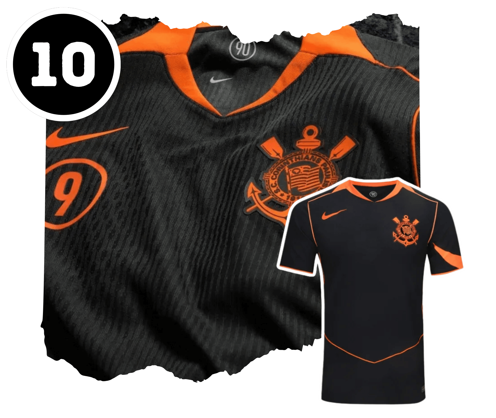
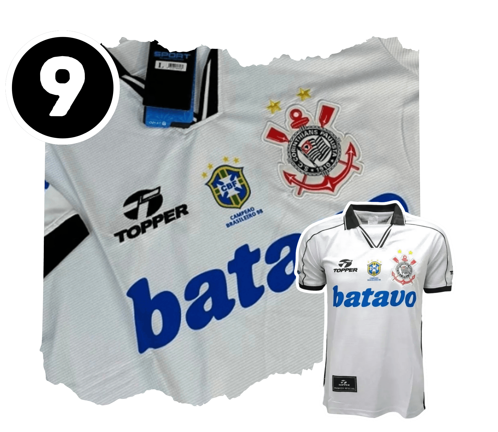
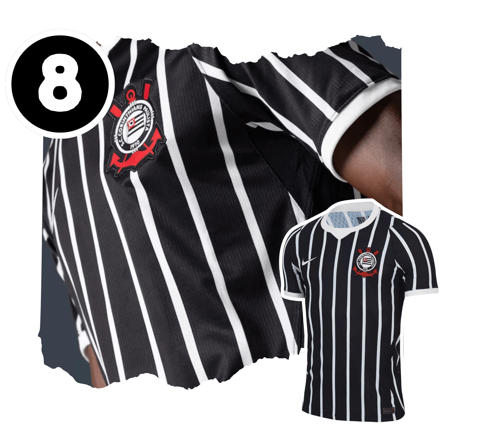
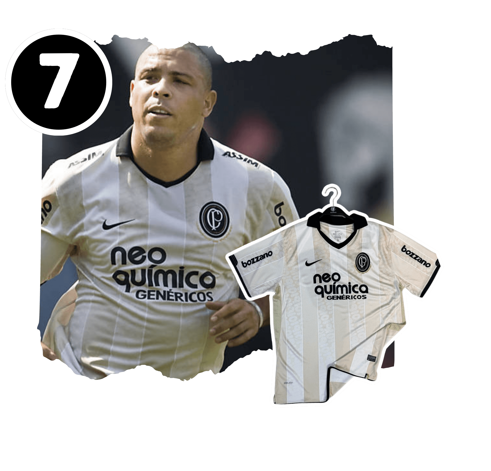
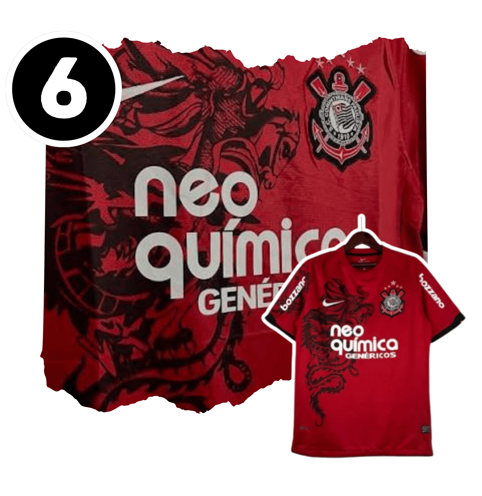
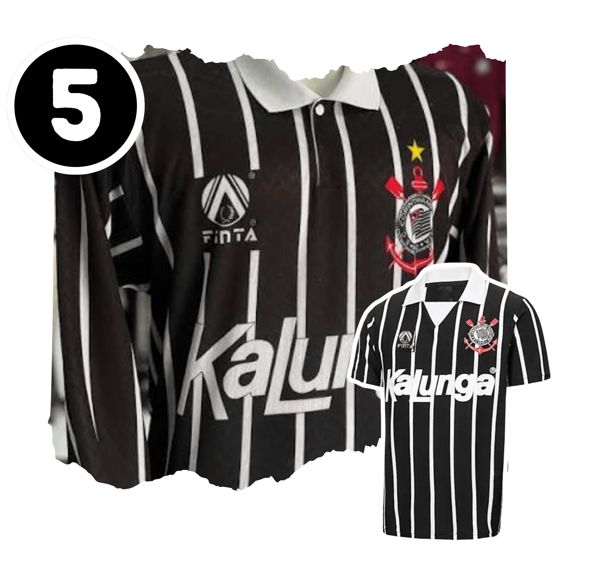
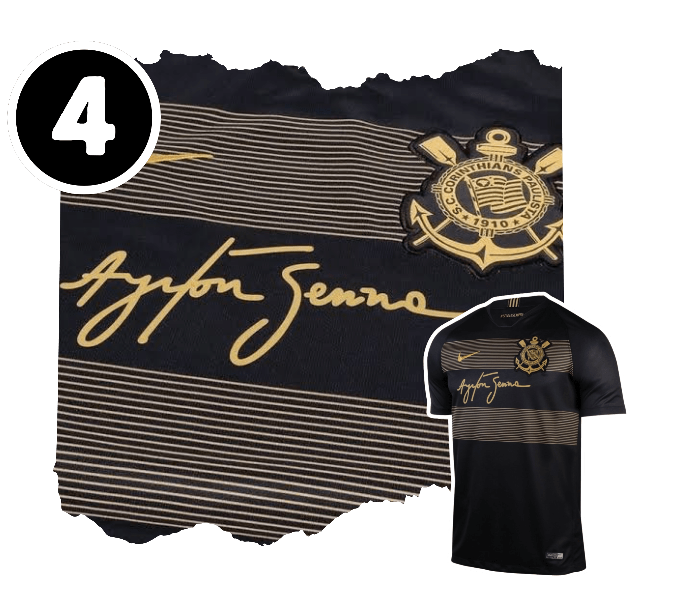
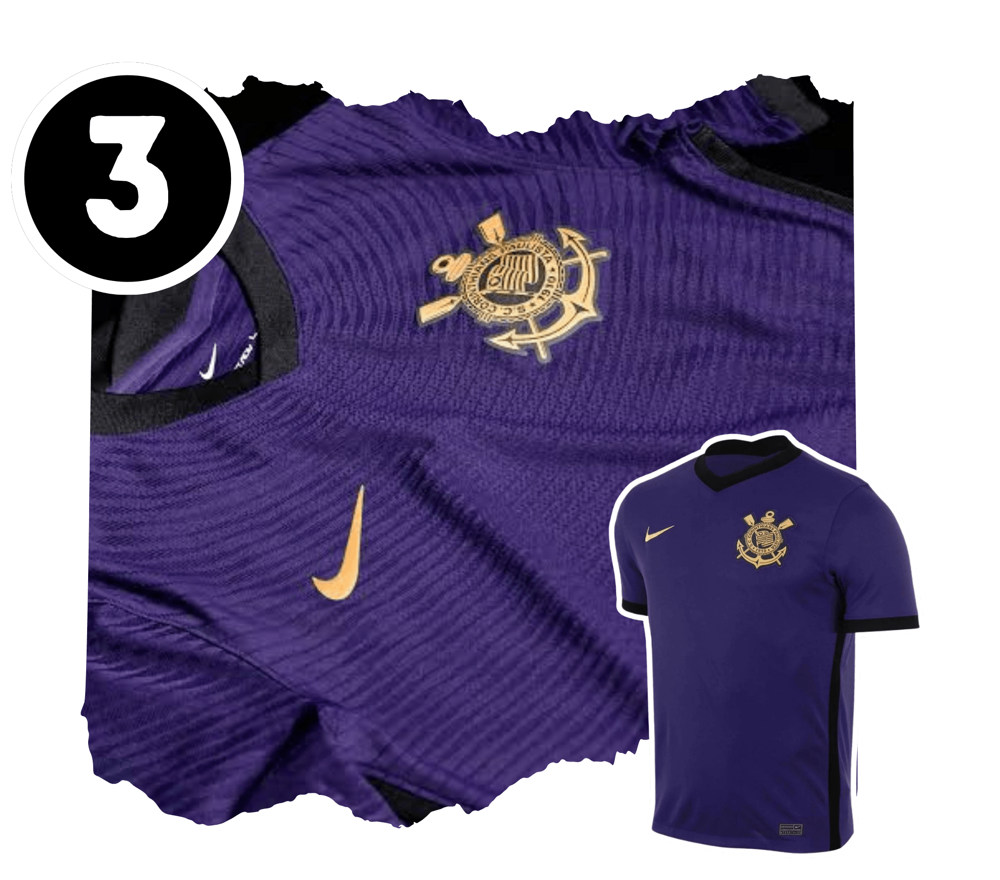
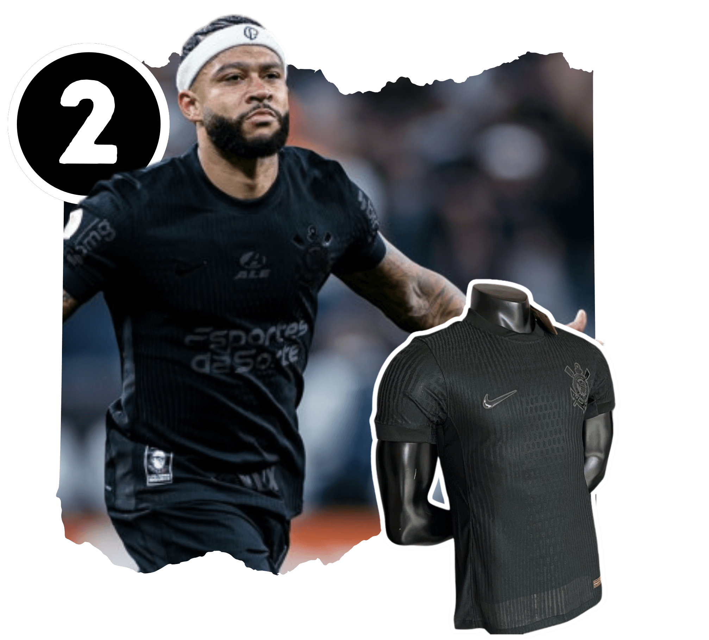
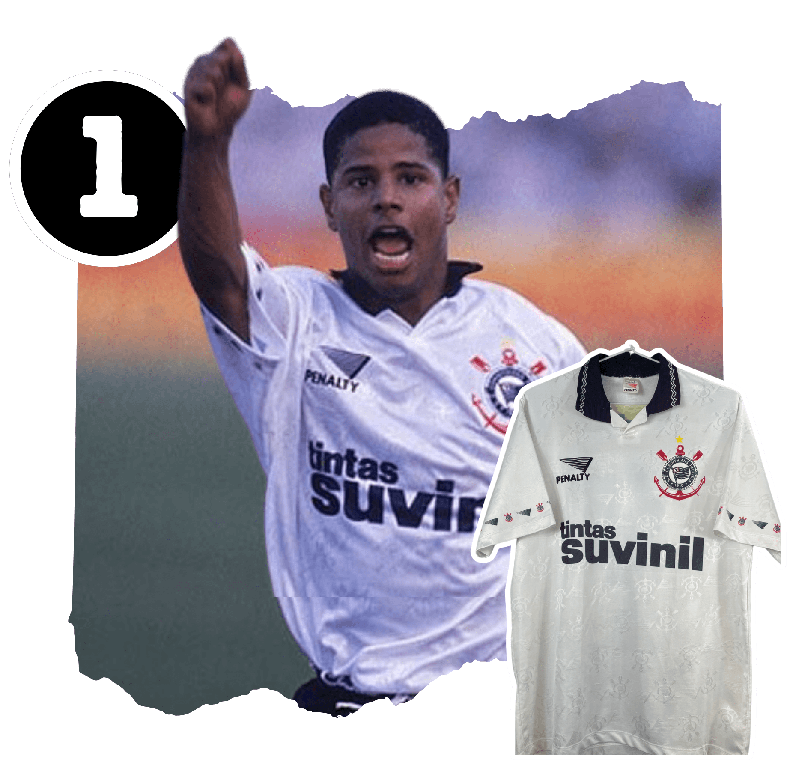

"Gosto muito desse templente da total 90, a cor laranja que a muitos anos vem sendo inserida nos kits do Corinthians combinou dmais com a campanha"

"Um dos melhores exemplos de como o patrocinio muda completamente a camisa (Neste caso para melhor), uma camisa retrô que além de histórica ousou com um padrão semelhante aos templetes da nike para a copa de 1998"

"É com certeza uma das melhores camisas "away" do Corinthians desde os anos 2000, ela tem uma pegada retrô que eu sentia muita falta nas camisas pretas, não que eu não gostasse dos outros modelos, mas, sempre senti falta das linhas "branco no preto" e uma fonte beeem retrô"

"Todos os times merecem uma camisa de "Centenário" de respeito, e além do Ronaldo, essa camisa com certeza respeita toda a história de um dos maiores clubes do mundo, moderna e clássica na mesma medida, o degradê entre o branco e o bege das primeiras camisas do Corinthians tras a representação histórica que precisavamos, e eu nem preciso falar sobre o escudo retrô, UM ESPETÁCULO"

"Simplesmente uma das camisas mais simbólicas do Corinthians, com a representação do maior simbolo da torcida corinthiana, o padroeiro do clube São Jorge, fora dos padrões tradicionais essa camisa conseguiu trazer o sentimento do torcedor para diretamente para dentro do campo, uma prova de que a fé do torcedor sempre está em com o time (Vale lembrar que essa foi a camisa do Pentacampeonato brasileiro do Timão)"

"Francamente, não consigo explicar de forma técnica o porque desta camisa estar aqui, ela é simplesmente linda, para mim é a definição de Sport Clube Corinthians Paulista, clássica, imponente e histórica"

"Mesmo vinda de um ano sem muitos triunfos, o principal acerto do Corinthians neste ano (e dos próximos também kkkk) foi essa camisa, uma homenagem para um dos maiores ídolos do povo brasileiro e principalmente para a torcida corinthiana, a camisa retrata o primeiro carro do Senna na fórmula 1, e consegue ser sutil e certeira na homenagem, uma camisa que só pode pertencer ao "clube mais brasileiro🎵"

"Essa camisa junta alguns aspectos do Corinthians mais atuais, a cor roxa que vem desde a campanha do "Corinthiano Roxo" de 2008 que representa o sentimento do torcedor corinthiano, e a liderança frente ao futebol feminino no Corinthians e no país, a primeira camisa feita pensando primeiramente na equipe feminina de todo o Brasil. A imponência dessa camisa, a mensagem, a beleza, todos os aspectos que compem ela são simplesmente Incríveis"

"Desde o lançamento dessa camisa, eu já a considerava uma das mais lindas do século, da mensagem ao seu aspecto visual, uma camisa feita para se enquadrar. Porém, após o ano de 2024 e, PRINCIPALMENTE, após a remontada no final do Campeonato Brasileiro, ela se tornou uma das mais fortes da história deste clube. Num momento em que tínhamos apenas dívidas, perigo de rebaixamento, corrupção e lamentáveis 29 PONTOS, o clube abraçou a única coisa que sempre acreditou nesse time, A TORCIDA. O sentimento da torcida passou para essa camisa, trazendo a imponência, a garra, a raça e o medo, tornando-se um aviso para o adversário que teria de enfrentar o mar negro corinthiano. Se antes ela era uma camisa para se enquadrar, com toda essa história posso afirmar que ela é uma verdadeira obra de arte."

"Ok, diferente de todas as outras camisas dessa lista, essa camisa passa principalmente pelo aspecto visual e pessoal. É até estranho que uma camisa de 1995 seja tão marcante para mim, mas ela é marcante para mim pois foi marcante para o meu pai, e uma das poucas fotos que tenho do meu pai um pouco mais jovem é exatamente dele com essa camisa, uma camisa majestosa, linda, linda, linda, de tecido brilhante, com uma harmonia tão simples e tão certeira, onde todos os detalhes são impecáveis. Eu tive a honra de, anos após a foto do meu pai, usar uma réplica da mesma camisa que comprei na primeira vez que fui à Arena (curiosamente no jogo pré-remontada de 2024), e o peso dessa camisa para mim vem de muito mais do que a sua incrível beleza, para mim a mais bela de todas as camisas do Sport Club Corinthians Paulista."